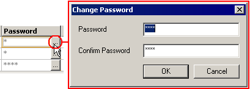

|
|
|
|
|
|
|
|
You can modify the user names, passwords, and fingerprints for Security Users in the Security Editor. You can also modify user names, passwords, and fingerprints during run time. See Sections 4.8.5, Managing Security Users at Run Time and 24.9.5, Managing Fingerprints at Runtime.
To modify a user name:
In the Security editor, click on the User Name cell and retype the User Name.
To modify a password:
In the Security editor, click the Password ellipsis to display the Change Password dialog box.

Type in the new password in the Password field and then confirm the password in the Confirm Password field.
Click OK to accept the password change.
To modify a user's fingerprints:
In the Security editor, click the Fingerprints ellipsis to display the Record Fingerprints dialog box. You will be prompted to delete the existing fingerprint record.
Capture the user's fingerprints as described in Section 24.9.2, Capturing Fingerprints.
Click OK to accept the change.